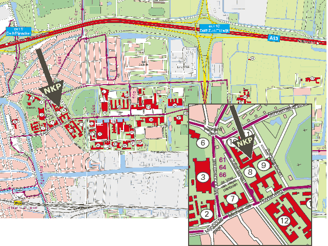

Sponsors


Dagprogramma
Routebeschrijving
Het NKP 2001 wordt gehouden aan de Faculteit Informatietechnologie en Systemen van de Technische Universiteit Delft. Het adres is:
Zuidplantsoen 4
2628 BZ Delft
De locatie is als volgt te bereiken.
Per auto
Vanuit richting Den Haag:
Je komt aanrijden over de A13. Neem de afslag Delft en ga rechtsaf de Oostpoortweg op. Sla, aan het einde van de weg, bij de tweede stoplichten linksaf, de Julianalaan in. Ga rechtdoor bij de kruising met de stoplichten (Schoemakerstraat) en direct daarna naar rechts, het Zuidplantsoen op. Het gebouw bevindt zich bij de parkeerplaats aan je rechterhand.
Vanuit richting Rotterdam:
Je komt aanrijden over de A13. Neem de afslag Delft-Zuid en direct daarna de afslag TU-wijk. Ga rechtsaf de Schoemakerstraat in. Rij een stuk rechtdoor en sla vlak voor de tweede stoplichten linksaf, het Zuidplantsoen op. Het gebouw bevindt zich bij de parkeerplaats aan je rechterhand.
Per openbaar vervoer
Met de bus:
Vanaf het NS Station Delft rijden de volgende bussen langs de Faculteit ITS:
- stadsbus 64, richting Delftse Hout IKEA / Aan 't Korft
- stadsbus 66, richting Delfgauw Emerald / Ruyven
- streekbus 121, richting Zoetermeer Centrum West
- streekbus 129, richting Rotterdam CS
In alle gevallen moet je uitstappen bij de tweede halte (Michiel de Ruyterweg / Julianalaan). De halte van de bussen 64 en 66 is op de Julianalaan: je moet dan een stukje teruglopen om weer op de Michiel de Ruyterweg te komen. De halte van de bussen 121 en 129 is op de Michiel de Ruyterweg.
Loop een klein stukje door over de Michiel de Ruyterweg en sla linksaf bij de eerste kruising. Het gebouw bevindt zich bij de
parkeerplaats aan je linkerhand.
Lopend:
Vanaf het NS Station Delft is het 15 tot 20 minuten lopen naar de Faculteit ITS.
Steek het stationsplein, de brug en de grote weg (Westvest) over en ga rechtdoor het smalle steegje in (Barbarasteeg). Loop rechtdoor de Breestraat in en ga direct na de tweede brug naar rechts (Korte Geer). Neem de eerste weg links (Giststraat) en sla aan het einde linksaf (Achterom). Ga rechts het bruggetje over en loop door het fietserstunneltje. Steek de fietsersbrug over en loop linksaf langs het water naar de grote brug. Loop onder de brug door en ga direct
daarna naar rechts (parallel aan de brug). Loop rechtdoor over de Michiel de Ruyterweg. Neem de derde weg links (Zuidplantsoen) (de eerste weg na de tweede stoplichten). Het gebouw bevindt zich bij de parkeerplaats aan je linkerhand.
Kaartje
{kind=link}